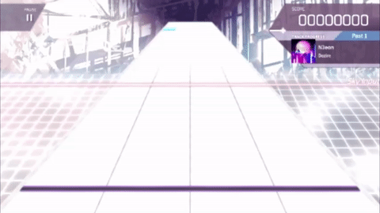
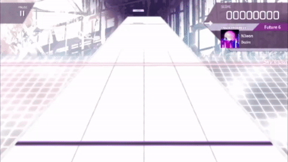

왼쪽 위 마름모 모양의 난이도를 눌러서 난이도를 바꿀 수 있습니다.
맨 오른쪽의 스크롤바를 드래그해 스크롤할 수 있으며,
노래를 선택하고 START를 눌러 게임을 시작합니다.
-------------------------------------
이 게임은 두 종류의 노트가 존재합니다.
Floor Note

하늘색의 납작한 노트로, 왼쪽부터 각각 D / F / J / K 키를 눌러서 처리가 가능합니다.
오직 정해진 레일에서만 노트가 떨어집니다.
Sky Note

회색 계열의 노트이며, S / L 키 중 아무거나 눌러서 처리가 가능합니다.
레일과 관계없이 위아래 자우 아무데서나 나올 수 있습니다.
Past 난이도에서는 등장하지 않으며,
Present 난이도에서는 반드시 맨 위(Sky Input과 정확히 일치)에서만 등장하며,
Future 난이도에서는 위아래 좌우로 나옵니다.